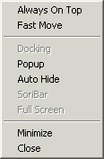

Depending on the object you right-click, different popup
menu/window pops up. These menus/windows are also available in SoriBar.
Refer to SoriBar Help for details on features
 |
System Popup Menu Default system popup menu. You can access Music Manger, Configuration, and add-on skins from this menu. Timer is a new feature where you can set time to start/stop playback or even shutdown the system. |
|  |
Window Mode/Option Popup Menu Pops up when right-clicking on the power button or clicking on the 'W' button. Docking - Only applies to add-on window. |
 |
Sound Control Popup menu Pops up when right-clicking on the Value Display or clicking on the sound control button. |
|
Song Control Popup Menu pops up when right-clicking on S or R buttons, or clicking on the song control button. Gap - defines the gap between songs. |
|
|
Playlist Popup Window When you right-click on the Main Display (Song title), this window pops up. This is the shortcut to the songs in the playlist.
|